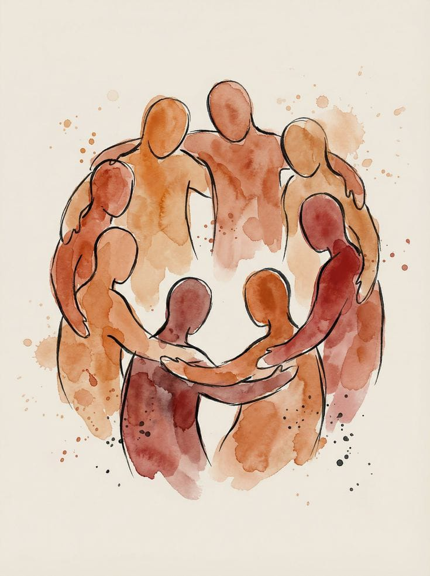

Mental Health

Care is not just what we offer. It is how we work.
Psychological safety is treated as a clinical and organisational practice, not a slogan, for both the
people we serve and the professionals who work with us.
Open dialogue, reflective practice, regular supervision, and a culture where uncertainty and questions
are welcomed, form the foundation of our work.
Ethical mental health care begins with practitioners who are supported, well-resourced, and able to work
at a sustainable pace.
Clinical integrity is prioritised over speed, depth over volume, and care over performance-driven
metrics.
Continuous learning is approached thoughtfully, grounded in evidence, and responsive to real-world
complexity.
Accessibility is pursued without being extractive, inclusion without being performative, and cultural
awareness through listening, humility, and accountability.